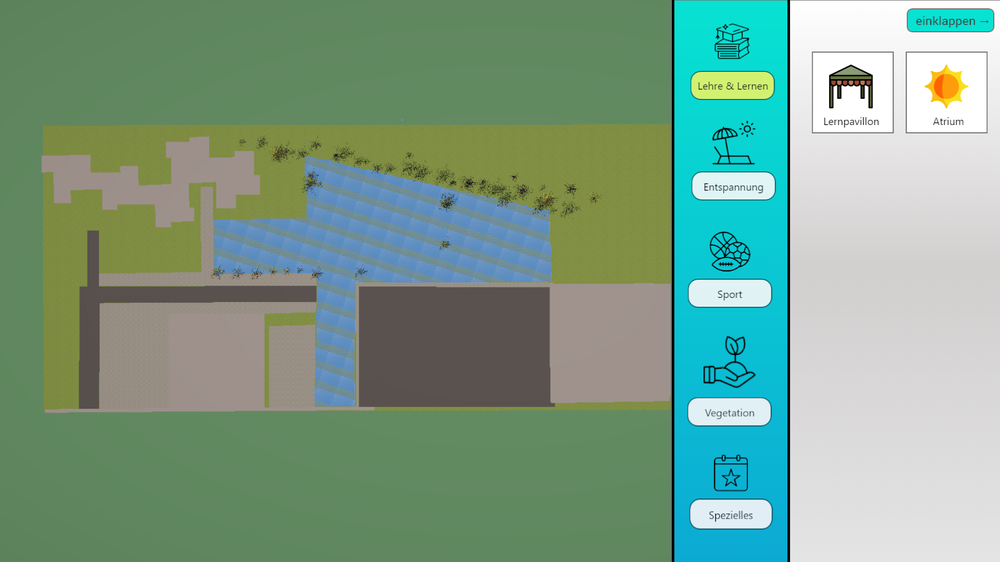

Den bib-FHDW-Campus von oben bebauen...
Erstellt im Rahmen eines 3DM-Projekts im SS25 am b.i.b. International College Paderborn
Dozent: Jörg Poppe
[Release] Version 1.0.0
Stand: 17.09.2025
Erste Version des Konfigurators:
- Modellierung des Baugeländes und der Umgebung mit Vegetation und Gebäudeumrissen, teils texturiert
- erste unterschiedlich konfigurierbare Assets (Größe/Zahl/Material) platzierbar
- Tag/Nacht/Dämmerung einstellbar
- Top-View und Point-Of-View verfügbar
mögliche Updates:
- weitere Assets
- Gebäudeumrisse durch bereits beim bib existierende 3D-Modelle für mehr Realitätsnähe ersetzen
- weitere Umgebungsdetails z.B. detailliertere Vegetation, Fahrzeuge, Flusszugang
- Speicherfunktion/Render-, Exportfunktion
- Upgrade auf Außen- & Inneneinrichtungskonfigurator des bib/FHDW